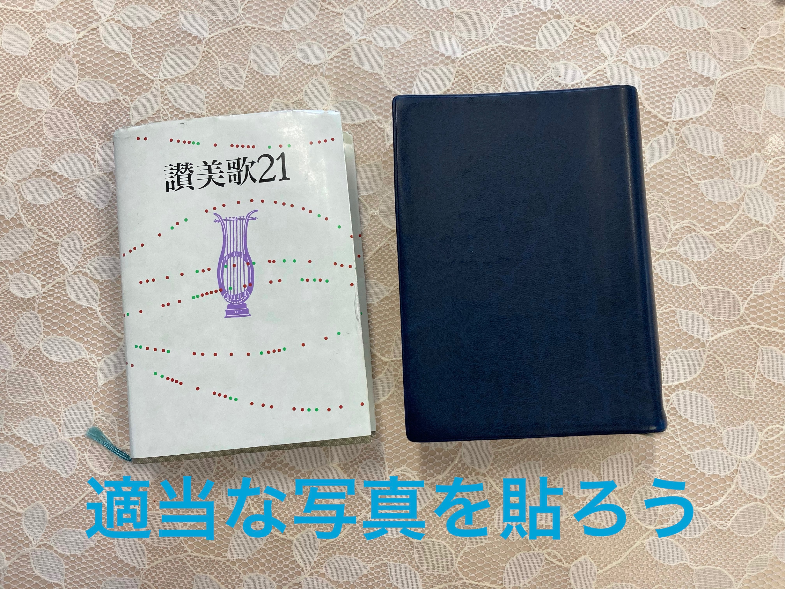
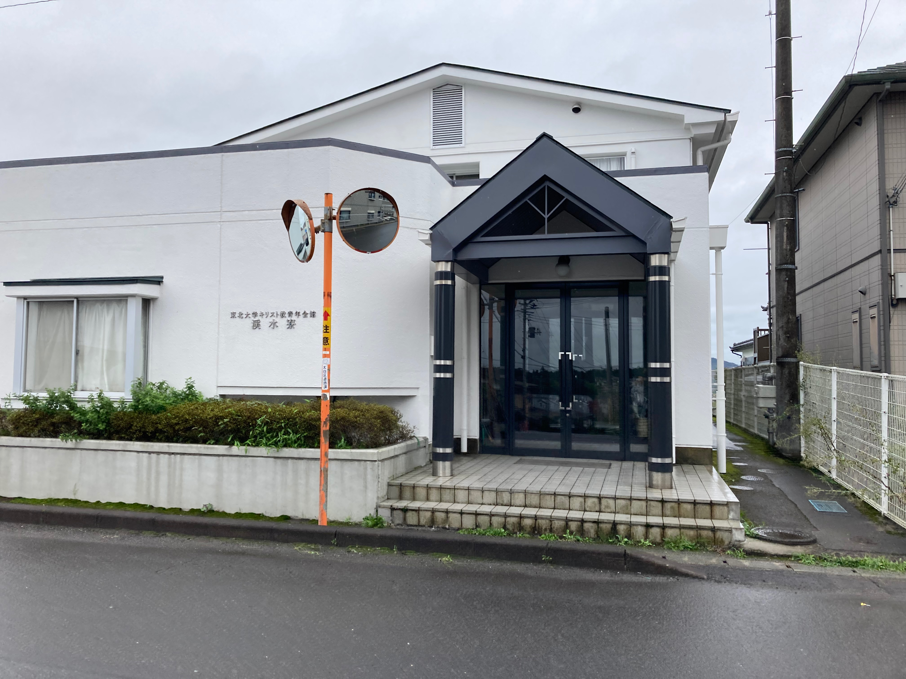
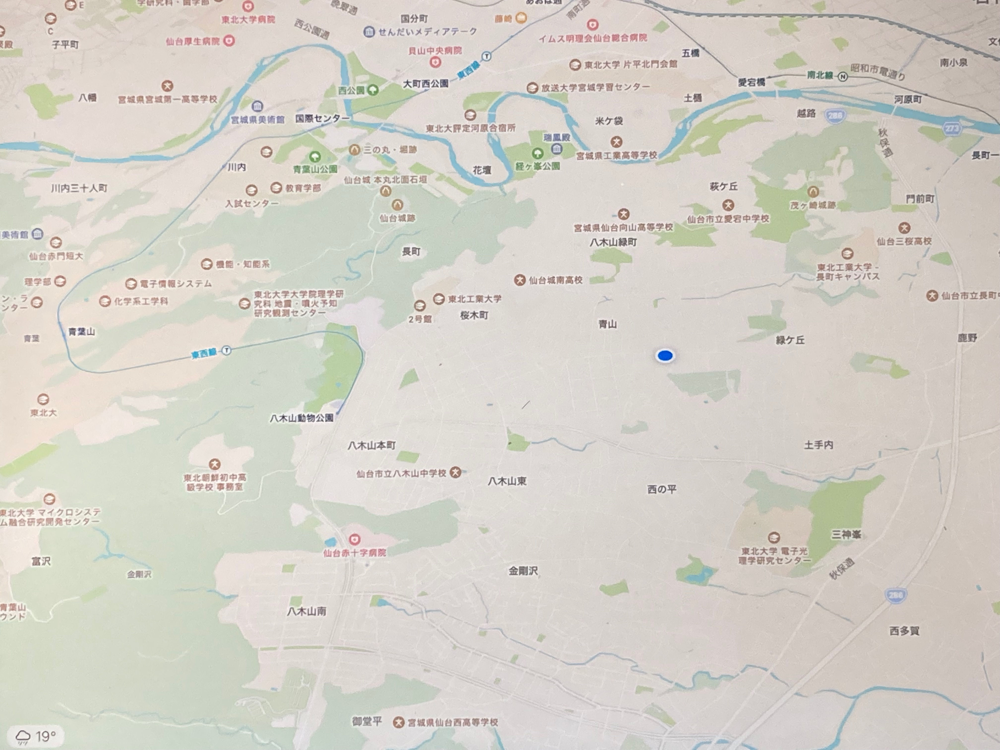

渓水寮とは
渓水寮は東北大学とは独立しています。 しかし、東北大学の教員などからなる理事やOPから支援や寄付を受けており、そのもとで寮生自ら寮の運営を行なっています。
渓水寮はキリスト教精神を母体とした学生YMCAに属しています。 ただし、寮生の多くはノンクリスチャンで、勧誘などはありません。
なお、東北工業大学や宮城教育大学など仙台市の大学生も受け入れています。
もっと見る→
寮費
水光熱費・寮食費などの諸経費込みで月4万7千円です。
ちなみに東北大周辺の家賃（のみ）も大体月４万7千円です。
なお、渓水寮では年度末に余ったお金の一部が返金されます。また、支払いは柔軟に行えます。
行事
渓水寮は東北大学とは独立しています。 しかし、東北大学の教員などからなる理事やOPから支援や寄付を受けており、そのもとで寮生自ら寮の運営を行なっています。
渓水寮はキリスト教精神を母体とした学生YMCAに属しています。 ただし、寮生の多くはノンクリスチャンで、勧誘などはありません。
なお、東北工業大学や宮城教育大学など仙台市の大学生も受け入れています。
もっと見る→



立地・アクセス
すぐそばコンビニやドラッグストア・郵便局などがあり、徒歩で買い物が行えます。
また、徒歩１０秒でバス停にたどり着けるので、定期を持っていると大学のみならず仙台一円を移動できます。
しかし、大学までは4km程度あるので、原付に乗る寮生もいます。
もっと見る→